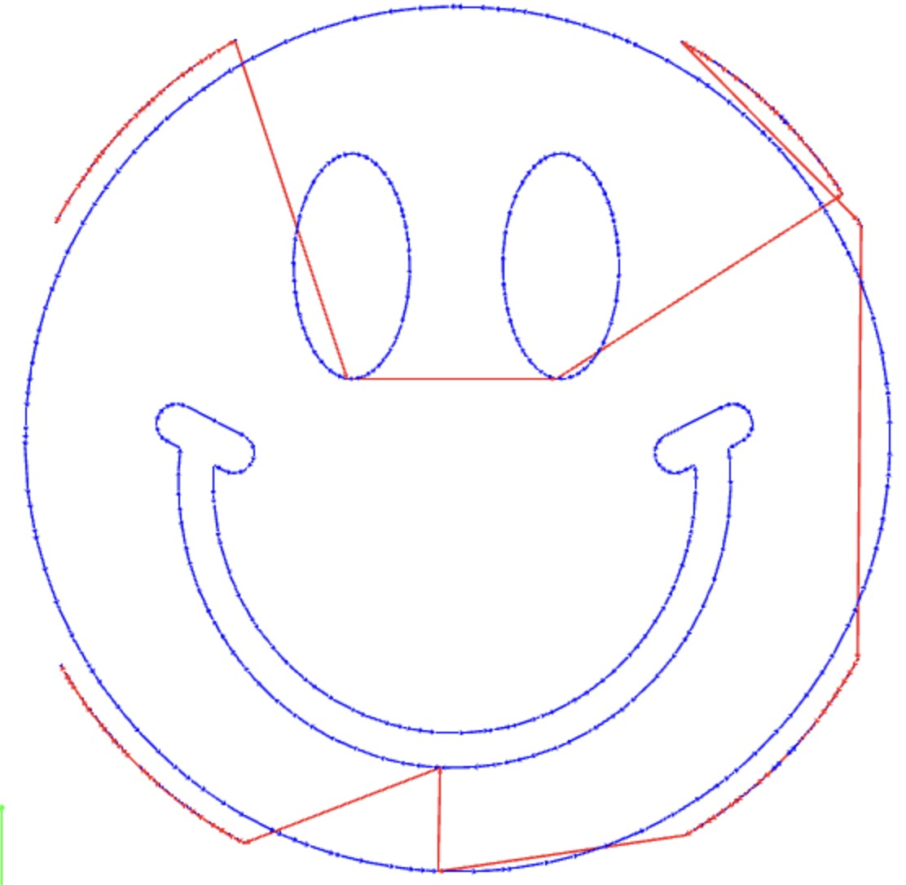
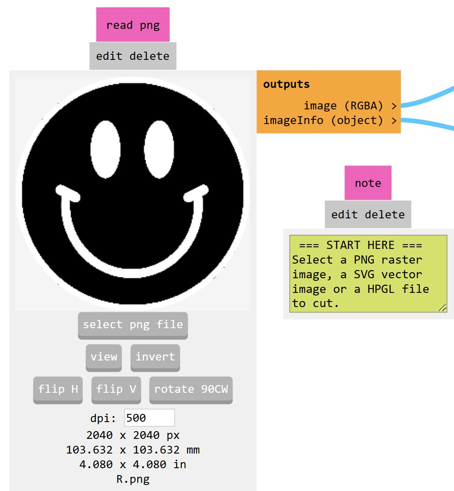
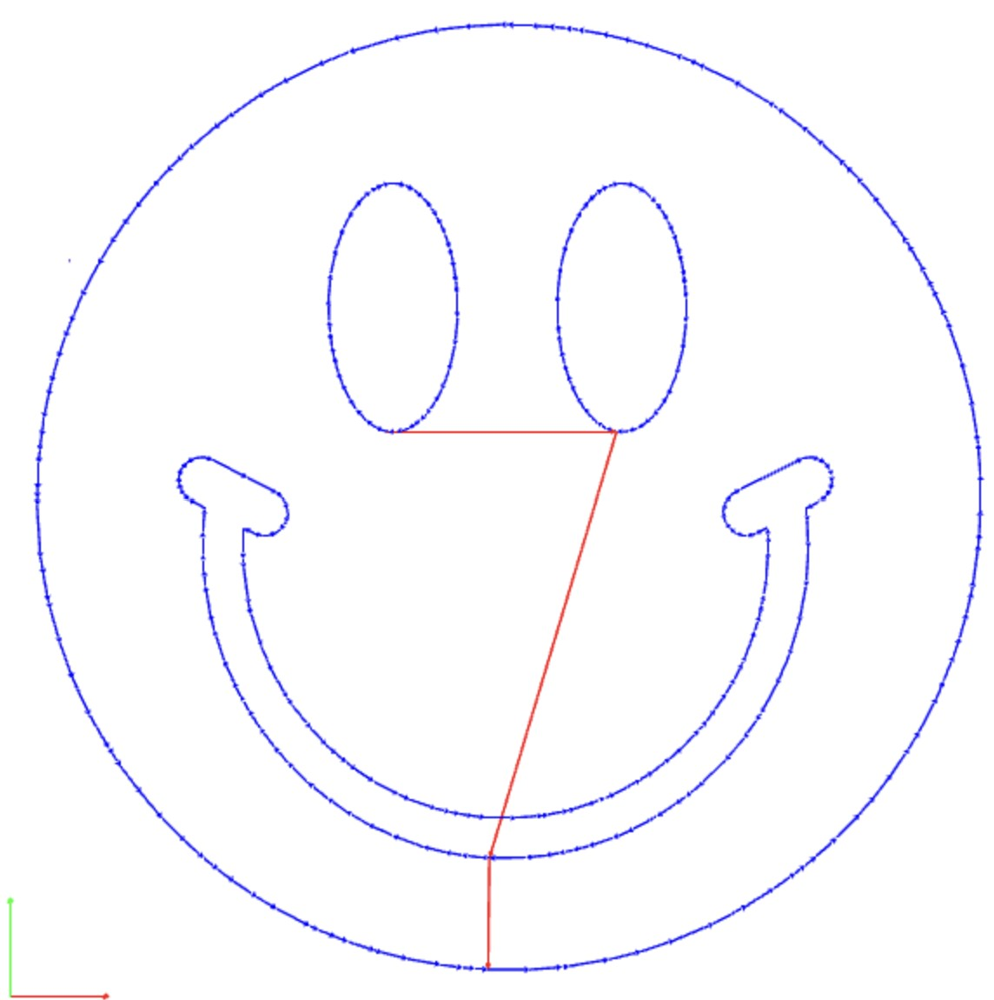
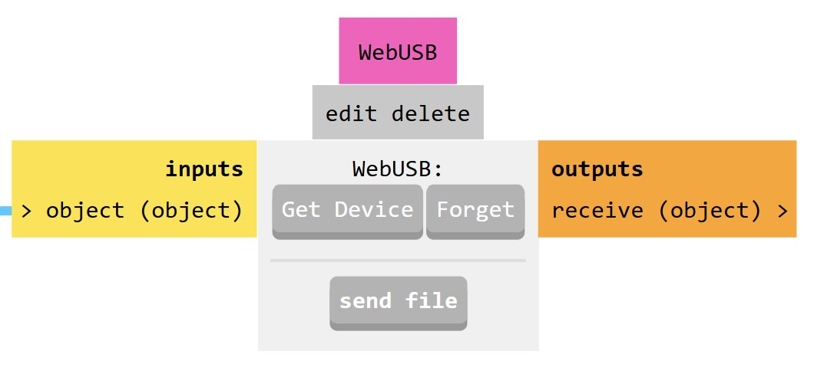
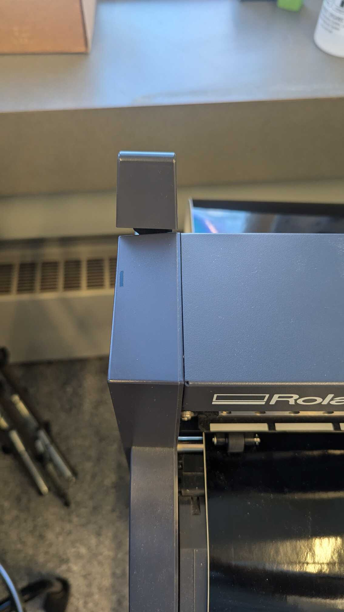
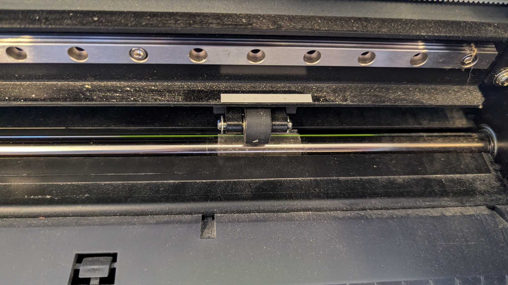
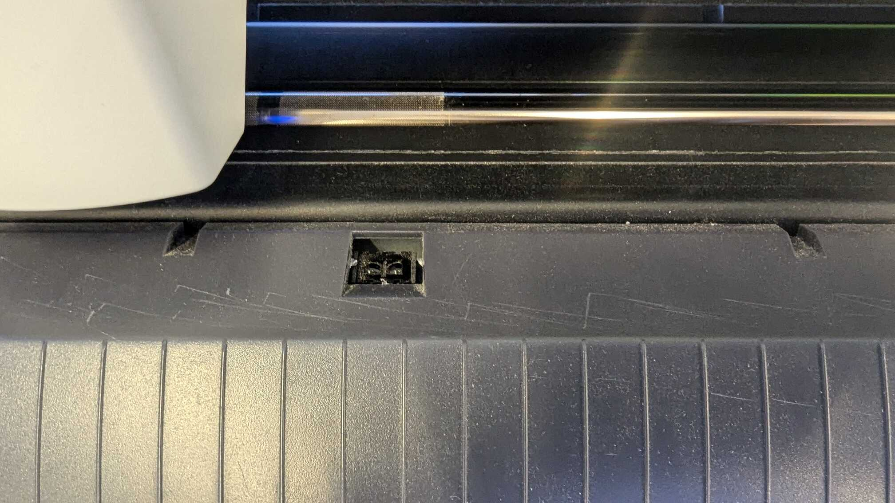
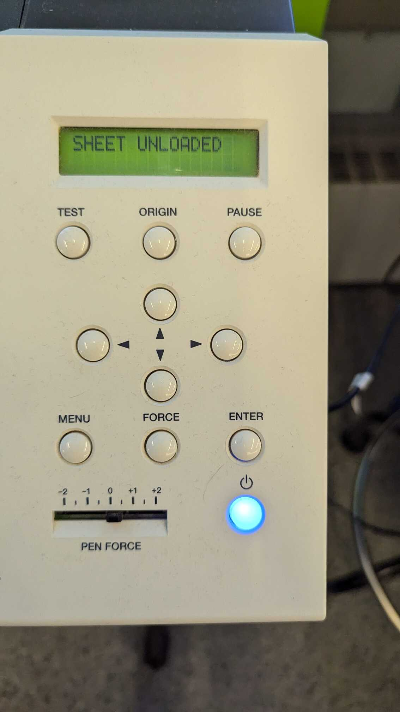

Vinyl Cutting
Getting an image
This is an area where you have the utmost creative control. Want to grab an image from somewhere of your favorite show/brand/game/team etc? Go for it. Want to freehand something in Illustrator/inkscape/gimp? Have at it. The only rules are that you want it to be black and white and that you'll want a solid white boarder around the bounds of your image in order to have somewhere for the knife to cut. If a black portion of your image extends all the way to the boundary then you'll find that edge missing from your toolpath. Certainly not the end of the world if you spot it before you start peeling as you can always freehand with some scissors or a knife but it doesn't take much to fix and make the machine do the work for you.
Running the machine
 We'll use the windows machine attached to the cutter to run everything this year. The password to this machine (and most in our shop) is "eds" Go ahead and open Google Chrome (must be a cromium derrived brower to enable web USB support) and go to mods.cba.mit.edu Mods is a program originally written by Neil, now receiving community support, whose goal is to replace many proprietary machine control programs with some opensource javascript based alternatives. Now right click and go to programs->open program->Roland->GX-GS 24 Vinyl cutters->cut. You should see a colorful block based gui that can be a little hard to swallow at first but generally flows from left to right and top to bottom with only a few areas for you to mess with along the way. Each block is a little snippet of code that does a useful portion of a job and the lines between them represent the dataflow betweent he modules. Together they form a nice system that in this case turns an image into a proper cut file for our machine.
We'll use the windows machine attached to the cutter to run everything this year. The password to this machine (and most in our shop) is "eds" Go ahead and open Google Chrome (must be a cromium derrived brower to enable web USB support) and go to mods.cba.mit.edu Mods is a program originally written by Neil, now receiving community support, whose goal is to replace many proprietary machine control programs with some opensource javascript based alternatives. Now right click and go to programs->open program->Roland->GX-GS 24 Vinyl cutters->cut. You should see a colorful block based gui that can be a little hard to swallow at first but generally flows from left to right and top to bottom with only a few areas for you to mess with along the way. Each block is a little snippet of code that does a useful portion of a job and the lines between them represent the dataflow betweent he modules. Together they form a nice system that in this case turns an image into a proper cut file for our machine.

Load an Image

First let's get our image into mods and ready for parsing. I'm starting with a png of a smiley face because it was free use and we can talk about pixels. This is an png so we'll load it into the png box and if you look at the bottom you'll see some important info. The image defaulted to a DPI (dots per inch) of 72. At this resolution the image has a size of ~28x28" which is too large to fit into our machine and we might not see the smoothest toolpaths given the relatively poor resolution. There's also some weird background junk going on that is large enough to be cut at this scale. If we increase the resolution to a more respectable 500 DPI the image will shrink to a more manageable 4"x4", the background noise is small enough that it disappears from our toolpaths, and we'll get much nicer curves and finer detail.

If you look closely here you'll see some jaggedness on the toolpath and some background noise in the image that is large enough to show up in the toolpath. Honestly this isn't too bad but if your DPI dips much below 70 it'll start to get much more apparent.

Now if we up the DPI to 500 the size of the image decreases to a more manageable ~4"x4"

And the toolpath becomes smoother also losing any of the background noise that was present in the original image. Do remember that these dimensions are the size of the window so they're a little soft as there can be quite a bit of white padding causing a discrepance between the size of your output and what the box is claiming.
Calculate the toolpaths
Mods takes the tool size as an input parameter then it is going to look at the boundary between white and black pixels, offset by the tool radius, and generate a toolpath to cut out your exact input. If it is your first time hitting the button the toolpaths should automatically open in another tab for your viewing pleasure/confirmation otherwise you might need to hit the "view toolpaths" button. It's worth a good 30-60 seconds of verification to make sure all the elements are there and seem to be of an appropriate resolution otherwise you might need to do some touchup by hand.
Connecting to the machine

Mods uses web USB so we'll need to tell it which device it should send the files to. We do this with the menu labeled WebUSB by clicking get device and choosing the GS-24 in the corresponding pop-up. After doing so you might dump the toolpaths from the cache so you may need to hit the calculate button again before you can continue.
Setting up the physical machine

First let's load our material into the machine. Start by pushing on the lever on the top left of the machine to raise the drive wheels. Place the roll of vinyl on the rollers in the back and feed the material through the slot to the front. The machine is assymetric so I generally find that left adjusting the material is the easiest.

Slide the rollers so that both wheels are on the edges of the material and also are located in the sections with white lines above them. This sounds pedantic but it's because those are the only sections of the drive rod that are knurled (had a rough surface texture cut into them) and if the machine detects the rollers are not in those locations it will refuse to run which tends to trip folks up.

Make sure to pull the vinyl far enough forward that it covers the eyes of the machine. This is a simple IR reflector that it uses to check if any material has actually been loaded and refuse to cut if it hasn't.

Now pull back on the lever to lock things down. If for some reason you want to adjust the origin use the arrows on the panel to navigate around and then hold the origin button until it says "origin set." You can also adjust the cutting force using the same menu if you find your cut was too deep or too shallow. I find that 120gF is sufficient for most vinyl.
Send the file
Now we should be ready to cut so just pop back over to mods and hit the send file button in the WebUSB block. If it instead says "waiting for file" then just hit calculate again and it should regenerate the toolpath for you. There isn't a time estimate for your file but most are done in just a few minutes.
Cut it out
Once the machine has finished either use the arrows to drive your design out or just hit the lever to release tension and pull it down. Cut all the way across the vinyl so you leave a nice square edge for the next user. These rolls have lasted a decade and still have lots of life left on them so don't feel bad about wasting too much material. It's much more annoying to deal with cut sections hitting the drive wheels and ruining the next file than you save from trying to just cut out the square around your design.
Weeding
At this point you can choose whether you want to pull off all the vinyl that is not part of your design now or after you've applied it to the final surface. I generally recommend weeding now because that keeps the nice hard steel tweezers away from the softer plastic or aluminium laptop case that most people put the stickers on but it's up to you. I strongly recommend having a copy of the photo open in front of you while you do the weeding so you can more easily determine whether you want to keep a particular piece of vinyl or not. Once you've peeled it off getting it back in the exact position and orientation is rather difficult. When peeling try to keep a very tight radius of curvature as you peel. This will help you not accidentally lift up pieces that were supposed to stay on the backing.
Transfer paper
If you've ever seen a "Just Married" sticker on a rear window where all of the letters are poorly spaced and aligned it's probably because they peeled each letter off individually and tried to place them by hand. There is however a much better way to preserve the distance and relationship between pieces of your design called transfer paper. This is basically just a stiff temporary tape that we'll cut to an appropriate size and apply to the front face of your vinyl before removing the backing. I grab a plastic scraper and use that to push out any air bubbles and make sure that everything stays just right. Once this is in place you can peel off the backing of the vinyl, attach it to whatever final surface interests you, squeegee out the air again then work on carefully peeling off the transfer paper without taking any more vinyl with it.